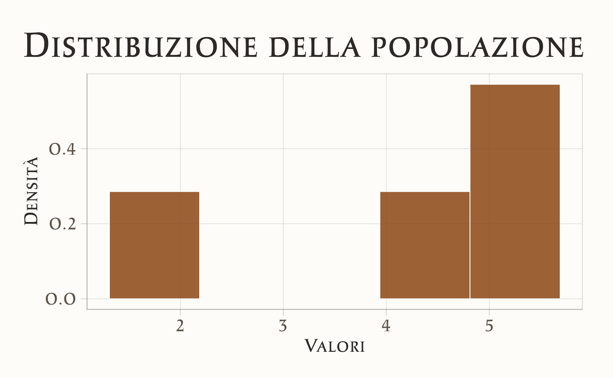
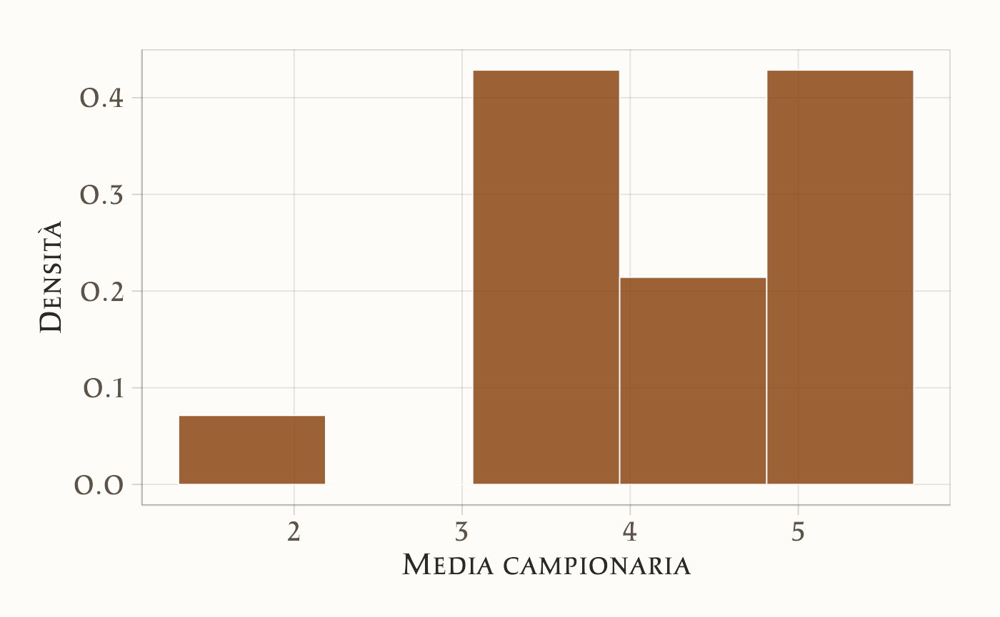
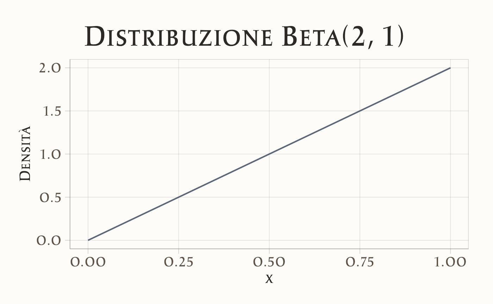
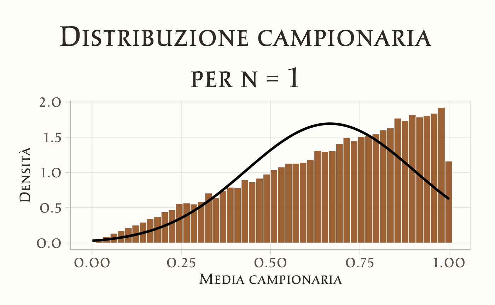
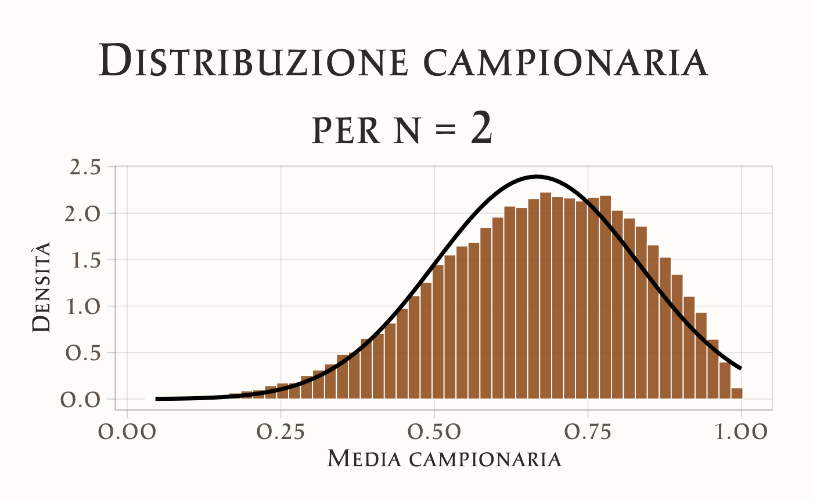
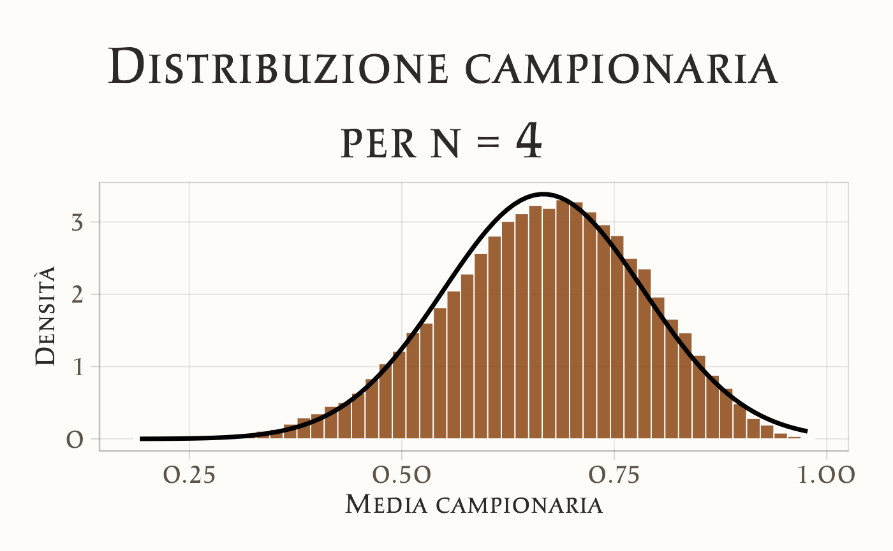
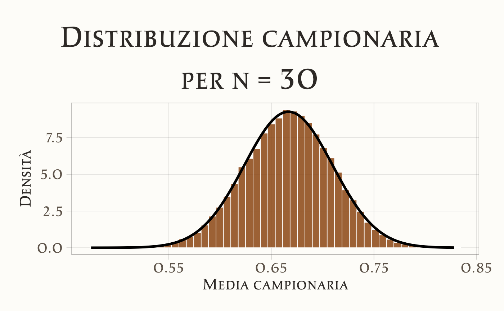
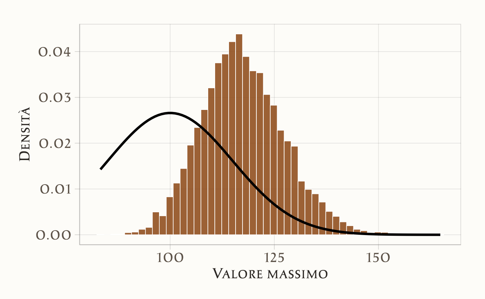
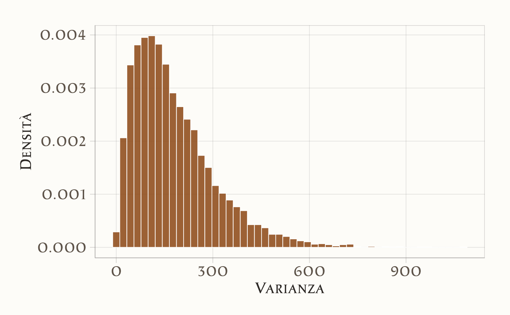
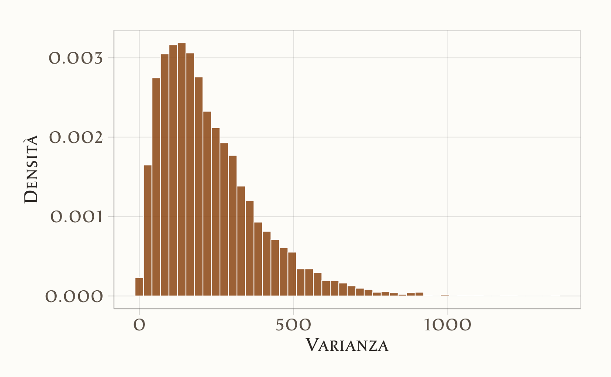

3 Stime, stimatori e parametri
3.1 Introduzione
In questo capitolo, ci concentreremo sul concetto di distribuzione campionaria, uno dei pilastri dell’inferenza statistica frequentista. La distribuzione campionaria descrive come le stime dei parametri della popolazione, come la media o la varianza, variano da campione a campione. Essa permette di stabilire proprietà probabilistiche delle stime campionarie, come la loro media e varianza, che sono fondamentali per costruire intervalli di confidenza e condurre test di ipotesi, strumenti essenziali dell’inferenza statistica frequentista.
3.2 Stime, stimatori e parametri
Dopo aver esplorato il contesto culturale del frequentismo nel capitolo precedente, ci spostiamo ora su un piano strettamente statistico per introdurre il concetto di stima statistica.
Quando si analizzano i dati, l’obiettivo è spesso quello di ottenere informazioni su una caratteristica della popolazione. Tuttavia, nella maggior parte dei casi, si ha accesso solo a un campione di osservazioni. La quantità sconosciuta che vogliamo stimare viene chiamata parametro, mentre il valore che calcoliamo dal campione per approssimare questo parametro è la stima. La formula o il procedimento matematico che utilizziamo per ottenere la stima è detto stimatore. Formalmente, uno stimatore è una funzione dei dati osservati utilizzata per produrre una stima di un parametro.
In altre parole, quando analizziamo un campione, cerchiamo di inferire proprietà della popolazione da cui il campione è tratto. Il parametro rappresenta una misura di queste proprietà, ma raramente può essere calcolato direttamente sulla popolazione intera. Pertanto, utilizziamo le osservazioni campionarie per ottenere una stima del parametro. La stima è quindi un’approssimazione del valore del parametro basata sui dati raccolti, mentre lo stimatore è la regola matematica o statistica che la produce.
È importante sottolineare che le stime non coincidono necessariamente con il vero valore del parametro, poiché sono soggette a incertezza dovuta alla variabilità del campionamento. In questo capitolo esamineremo come l’approccio frequentista quantifica questa incertezza e come possiamo utilizzare tale quantificazione per trarre conclusioni affidabili sui parametri di interesse.
3.3 Distribuzione campionaria
Nell’inferenza frequentista applicata alla psicologia, il parametro di maggiore interesse è spesso la media della popolazione—si veda anche la discussione nella ?sec-eda-ergodic-fallacy. In questo capitolo esploreremo come la media di un campione casuale possa essere utilizzata per stimare la media \(\mu\) di una popolazione. Per valutare l’incertezza associata a questa stima, introdurremo il concetto di distribuzione campionaria, un principio fondamentale dell’approccio frequentista.
Per chiarire questa idea, inizieremo con un esempio basato su una popolazione finita di piccole dimensioni, pur consapevoli che le proprietà illustrate si estendono anche a popolazioni di dimensioni maggiori.
3.3.1 Esempio introduttivo
Consideriamo la seguente popolazione:
x <- c(2, 4.5, 5, 5.5)
x
#> [1] 2.0 4.5 5.0 5.5Questi valori potrebbero rappresentare il tempo di reazione (in secondi) di quattro partecipanti a un esperimento di decisione rapida, in cui devono identificare il colore di uno stimolo visivo. In questo caso, l’intera popolazione è costituita da tutti i partecipanti disponibili per lo studio, ad esempio se l’esperimento è stato condotto in un piccolo gruppo di persone selezionate per caratteristiche specifiche, come quattro gemelli monozigoti in uno studio sulle differenze cognitive intra-familiari.
L’istogramma sottostante rappresenta la distribuzione di frequenza della popolazione:
# Creazione del dataframe
df <- data.frame(Valori = c(2, 4.5, 5, 5.5))
# Istogramma con ggplot2
ggplot(df, aes(x = Valori)) +
geom_histogram(bins = 5, aes(y = after_stat(density)), color = "white") +
labs(title = "Distribuzione della popolazione", x = "Valori", y = "Densità") 
Calcoliamo la media e la varianza della popolazione:
3.3.2 Campionamento
Consideriamo ora tutti i possibili campioni di dimensione \(n = 2\) che possiamo estrarre dalla popolazione. Poiché ogni valore può essere selezionato indipendentemente in entrambe le posizioni del campione, il numero totale di combinazioni possibili si ottiene con il calcolo combinatorio:
\[ \text{Numero totale di campioni} = k^n , \]
dove \(k\) è la dimensione della popolazione e \(n\) è la dimensione del campione. Nel nostro caso, con \(k = 4\) e \(n = 2\), otteniamo:
\[ 4^2 = 16 . \]
Possiamo generare esplicitamente queste combinazioni con il seguente codice:
samples <- expand.grid(x, x)
samples
#> Var1 Var2
#> 1 2.0 2.0
#> 2 4.5 2.0
#> 3 5.0 2.0
#> 4 5.5 2.0
#> 5 2.0 4.5
#> 6 4.5 4.5
#> 7 5.0 4.5
#> 8 5.5 4.5
#> 9 2.0 5.0
#> 10 4.5 5.0
#> 11 5.0 5.0
#> 12 5.5 5.0
#> 13 2.0 5.5
#> 14 4.5 5.5
#> 15 5.0 5.5
#> 16 5.5 5.5Ogni riga rappresenta un campione possibile. Confermiamo il numero totale di campioni con:
nrow(samples)
#> [1] 16Ora calcoliamo la media di ciascun campione, ottenendo la distribuzione campionaria delle medie per \(n = 2\):
sample_means <- rowMeans(samples)
sample_means
#> [1] 2.00 3.25 3.50 3.75 3.25 4.50 4.75 5.00 3.50 4.75 5.00 5.25 3.75 5.00 5.25
#> [16] 5.50Questa distribuzione campionaria mostra tutte le possibili medie che possiamo ottenere estraendo campioni casuali di dimensione 2 dalla popolazione. Si tratta di un concetto fondamentale in inferenza statistica frequentista, poiché la distribuzione delle medie campionarie diventa progressivamente più simmetrica e concentrata attorno alla media della popolazione man mano che \(n\) aumenta, come previsto dal teorema del limite centrale.
3.3.3 Visualizzazione della distribuzione campionaria
Possiamo visualizzare la distribuzione campionaria delle medie con un istogramma:
# Creazione del dataframe
df <- data.frame(Valori = sample_means)
# Istogramma con ggplot2
ggplot(df, aes(x = Valori)) +
geom_histogram(bins = 5, aes(y = after_stat(density)), color = "white") +
labs(x = "Media campionaria", y = "Densità") 
L’istogramma mostra come le medie campionarie non siano distribuite uniformemente, ma seguano una struttura precisa determinata dalla distribuzione dei valori originali della popolazione. Con un numero maggiore di osservazioni per campione (\(n\) più grande), la distribuzione campionaria delle medie tende a diventare più stretta e simmetrica attorno alla media della popolazione, illustrando così il principio alla base dell’inferenza statistica frequentista.
3.3.4 Verifiche teoriche
3.3.4.1 Media della distribuzione campionaria
Secondo la teoria statistica, la media della distribuzione campionaria deve coincidere con la media della popolazione. Questo implica che, se prendiamo la media di tutti i campioni possibili di una certa dimensione, il valore risultante sarà uguale alla media della popolazione stessa. Possiamo verificarlo con il seguente calcolo:
3.3.4.2 Varianza della distribuzione campionaria
Un altro risultato importante è che la varianza della distribuzione campionaria delle medie è inferiore alla varianza della popolazione. In particolare, la teoria prevede che sia pari alla varianza della popolazione divisa per la dimensione del campione \(n\):
\[ \mathbb{V}(\bar{X}) = \frac{\sigma^2}{n} \]
Poiché in questo caso \(n = 2\), confrontiamo la varianza teorica con quella empirica:
variance(x) / 2 # Varianza teorica
#> [1] 0.906
variance(sample_means) # Varianza empirica
#> [1] 0.906Osserviamo che la varianza delle medie campionarie è inferiore alla varianza della popolazione, confermando che le medie campionarie mostrano meno variabilità rispetto alle singole osservazioni.
3.3.5 Esempio di campione osservato
Per comprendere meglio questi concetti, consideriamo un singolo campione, ad esempio:
observed_sample <- c(5, 5.5)
observed_sample
#> [1] 5.0 5.5Calcoliamo la sua media e deviazione standard:
Ora confrontiamo questi valori con quelli della popolazione:
Osserviamo che la media del campione si avvicina a quella della popolazione, ma non coincide necessariamente con essa. Questo è del tutto normale: ogni campione rappresenta solo una porzione della popolazione e la sua media può variare leggermente a seconda delle osservazioni selezionate.
Per quanto riguarda la deviazione standard, in questo caso specifico risulta inferiore a quella della popolazione. Tuttavia, in generale, la dispersione di un singolo campione può essere maggiore o minore rispetto a quella della popolazione, poiché dipende dalla variabilità casuale delle osservazioni estratte. Proprio per questo motivo, per trarre inferenze affidabili sulla popolazione, è più utile considerare la distribuzione campionaria delle medie piuttosto che un singolo campione isolato.
Questo esempio illustra bene il principio della stima campionaria: mentre un singolo campione fornisce un’informazione parziale, l’analisi di molteplici campioni consente di ottenere una stima più precisa e stabile della media della popolazione, riducendo l’incertezza e migliorando l’affidabilità dell’inferenza statistica.
3.3.6 La Simulazione Illustra Due Principi
Dalla simulazione emergono due principi fondamentali dell’inferenza statistica:
-
La media della distribuzione campionaria coincide con la media della popolazione. Questo implica che se estraiamo molteplici campioni di dimensione \(n\) e calcoliamo la loro media, il valore atteso della media campionaria sarà uguale alla media della popolazione \(\mu\). Formalmente:
\[ \mathbb{E}(\bar{X}_n) = \mu . \]
Questo risultato conferma che la media campionaria è uno stimatore non distorto della media della popolazione.
-
La varianza della distribuzione campionaria è minore della varianza della popolazione. Questo riflette il fatto che le medie campionarie tendono a essere più stabili rispetto alle singole osservazioni. La relazione teorica che descrive questa proprietà è:
\[ \mathbb{V}(\bar{X}) = \frac{\sigma^2}{n} . \]
Ciò significa che, aumentando la dimensione del campione \(n\), la variabilità delle medie campionarie si riduce, rendendo la stima della media della popolazione più precisa. Questo concetto è alla base della teoria del teorema centrale del limite, che diventa sempre più evidente con campioni di dimensioni maggiori.
3.4 Proprietà della distribuzione campionaria
Una caratteristica fondamentale della distribuzione campionaria riguarda la sua forma e il modo in cui dipende dalla distribuzione della popolazione da cui vengono estratti i campioni. Possiamo distinguere due casi principali:
Se la popolazione segue una distribuzione normale, allora anche la distribuzione delle medie campionarie sarà normalmente distribuita, indipendentemente dalla dimensione del campione \(n\). Questo significa che, anche con campioni molto piccoli, la media campionaria manterrà la stessa forma della distribuzione originale.
Se la popolazione non segue una distribuzione normale, entra in gioco il teorema centrale del limite. Questo teorema afferma che, man mano che la dimensione del campione \(n\) aumenta, la distribuzione delle medie campionarie tenderà comunque a una distribuzione normale, indipendentemente dalla forma della distribuzione di partenza. In pratica, per campioni sufficientemente grandi, possiamo approssimare la distribuzione delle medie campionarie con una normale, anche se la popolazione da cui provengono i dati è asimmetrica o non gaussiana.
Queste proprietà sono fondamentali nell’inferenza statistica frequentista: permettono di stimare e testare parametri della popolazione utilizzando campioni, facilitando l’applicazione di strumenti basati sulla distribuzione normale, come gli intervalli di confidenza e i test di ipotesi.
3.5 Teorema del Limite Centrale
Esaminiamo ora più in dettaglio il Teorema del Limite Centrale (TLC). Nel 1812, Pierre-Simon Laplace dimostrò il TLC, che afferma che la somma (o la media) di una sequenza di variabili casuali indipendenti e identicamente distribuite (i.i.d.) tende a distribuirsi secondo una distribuzione Normale (o Gaussiana), al crescere della dimensione del campione. Inoltre, il TLC specifica i parametri della distribuzione Normale risultante in base ai valori attesi e alle varianze delle variabili casuali sommate.
Teorema 3.1 Si consideri una sequenza di variabili aleatorie indipendenti e identicamente distribuite (i.i.d.) \(Y_1, Y_2, \dots, Y_n\), con valore atteso \(\mathbb{E}(Y_i) = \mu\) e deviazione standard \(\text{SD}(Y_i) = \sigma.\) Si definisca una nuova variabile casuale come la media campionaria:
\[ Z = \frac{1}{n} \sum_{i=1}^n Y_i. \]
Al tendere di \(n\) all’infinito (\(n \rightarrow \infty\)), la distribuzione di \(Z\) converge a una distribuzione Normale con valore atteso \(\mu\) e deviazione standard \(\frac{\sigma}{\sqrt{n}}\):
\[ Z \sim \mathcal{N}\left(\mu, \, \frac{\sigma}{\sqrt{n}} \right). \]
In altre parole, la densità di probabilità di \(Z\) tende a:
\[ p_Z(z) \rightarrow \mathcal{N}\left(z \ \Bigg| \ \mu, \, \frac{\sigma}{\sqrt{n}} \right). \]
Il TLC può essere generalizzato anche a variabili casuali che non sono identicamente distribuite, purché siano indipendenti e abbiano valori attesi e varianze finite. Questo teorema spiega perché molti fenomeni naturali, come l’altezza degli adulti o il peso di una popolazione, tendono a seguire una distribuzione Normale. Infatti, tali fenomeni sono spesso il risultato di una combinazione di numerosi effetti additivi e indipendenti, ciascuno dei quali contribuisce in modo relativamente piccolo. Indipendentemente dalla distribuzione individuale di ciascun effetto, la loro somma (o media) tende a distribuirsi in modo Normale. Questa è la ragione per cui la distribuzione Normale fornisce una buona approssimazione per la distribuzione di molti fenomeni osservati in natura.
3.5.1 Illustrazione del Teorema del Limite Centrale (TLC)
Per comprendere il Teorema del Limite Centrale (TLC), consideriamo una popolazione iniziale che segue una distribuzione fortemente asimmetrica: la distribuzione Beta(2,1), caratterizzata da una forte asimmetria positiva.
# Parametri della distribuzione Beta
a <- 2
b <- 1
# Genera valori per la distribuzione Beta
x <- seq(0, 1, length.out = 1000) # Valori tra 0 e 1
y <- dbeta(x, shape1 = a, shape2 = b) # Densità della distribuzione Beta
# Crea un dataframe per qplot
data <- data.frame(x = x, y = y)
# Grafico con qplot
qplot(x, y, data = data, geom = "line",
main = "Distribuzione Beta(2, 1)",
xlab = "x",
ylab = "Densità")
Estrarremo più volte campioni casuali di ampiezza \(n\) da questa popolazione e calcoleremo le medie campionarie. Il TLC prevede che, all’aumentare della dimensione del campione, la distribuzione delle medie campionarie tenda a una distribuzione normale, indipendentemente dalla forma della popolazione di partenza.
Per verificare questa proprietà, definiamo una funzione che genera campioni, calcola le medie e visualizza la loro distribuzione campionaria per diversi valori di \(n\):
# Parametri della distribuzione Beta
alpha <- 2
beta <- 1
# Funzione per simulare e visualizzare la distribuzione campionaria
plot_samples <- function(n) {
# Media e deviazione standard della distribuzione Beta
mu <- alpha / (alpha + beta)
sigma <- sqrt(alpha * beta / ((alpha + beta)^2 * (alpha + beta + 1)))
# Generazione di 50.000 campioni casuali di dimensione n
sample_means <- replicate(50000, mean(rbeta(n, alpha, beta)))
# Creazione del dataframe
df <- data.frame(MediaCampionaria = sample_means)
# Creazione del grafico con ggplot2
ggplot(df, aes(x = MediaCampionaria)) +
geom_histogram(aes(y = after_stat(density)), bins = 50, color = "white") +
stat_function(fun = dnorm, args = list(mean = mu, sd = sigma / sqrt(n)), color = "black", lwd = 1.2) +
labs(title = paste("Distribuzione campionaria\nper n =", n),
x = "Media campionaria",
y = "Densità")
}3.5.1.1 Visualizzazione della convergenza alla normalità
Analizziamo l’effetto della dimensione del campione sulle medie campionarie:
-
Campioni di ampiezza \(n = 1\)
Se \(n = 1\), la distribuzione campionaria coincide esattamente con la distribuzione della popolazione di partenza, che in questo caso è fortemente asimmetrica:
plot_samples(1)
-
Campioni di ampiezza \(n = 2\)
Con \(n = 2\), la distribuzione delle medie campionarie inizia a perdere parte della sua asimmetria:
plot_samples(2)
-
Campioni di ampiezza \(n = 4\)
Per \(n = 4\), la distribuzione delle medie campionarie diventa più simmetrica e tende già a una forma più vicina a quella normale:
plot_samples(4)
-
Campioni di ampiezza \(n = 30\)
Quando \(n\) diventa sufficientemente grande (ad esempio \(n = 30\)), la distribuzione campionaria delle medie è praticamente indistinguibile da una normale:
plot_samples(30)
3.5.1.2 Conclusione
Il Teorema del Limite Centrale (TLC) afferma che, indipendentemente dalla forma della distribuzione della popolazione:
Se la dimensione del campione è sufficientemente grande, la distribuzione delle medie campionarie \(\bar{X}\) sarà approssimativamente normale, anche se la popolazione di partenza non lo è.
-
La distribuzione delle medie campionarie avrà media uguale a quella della popolazione \(\mu\) e deviazione standard pari a:
\[ \bar{X} \sim \mathcal{N}(\mu, \sigma / \sqrt{n}) \]
dove \(\sigma\) è la deviazione standard della popolazione e \(n\) è la dimensione del campione.
3.5.2 Implicazioni
Normalità emergente
Il TLC giustifica l’uso della distribuzione normale in molte applicazioni statistiche, anche quando i dati originali non seguono una distribuzione normale.Errore standard e precisione delle stime
Il TLC fornisce una formula esplicita per calcolare l’errore standard \(\sigma / \sqrt{n}\), che quantifica l’incertezza associata alla media campionaria. All’aumentare di \(n\), l’errore standard diminuisce, migliorando la precisione della stima della media della popolazione.
Questa proprietà è alla base di molte tecniche statistiche, come gli intervalli di confidenza e i test di ipotesi, che assumono la normalità della distribuzione campionaria delle medie anche quando la popolazione di partenza non è normale.
3.5.3 Applicazioni in psicologia
Molti fenomeni psicologici che misuriamo (ad esempio, il QI come media di molte abilità cognitive) derivano dalla media di più variabili, e quindi seguono la distribuzione normale grazie al TLC. Questo spiega perché la distribuzione normale appare così frequentemente nei dati sperimentali di psicologia e in molte altre discipline scientifiche.
3.6 Distribuzioni campionarie di altre statistiche
Abbiamo già analizzato la distribuzione campionaria della media dei campioni. Tuttavia, è possibile costruire distribuzioni campionarie per altre statistiche campionarie. Ad esempio, consideriamo la distribuzione campionaria del valore massimo e della varianza.
3.6.1 Distribuzione campionaria del valore massimo
Supponiamo di avere una popolazione normalmente distribuita con media \(\mu = 100\) e deviazione standard \(\sigma = 15\). Generiamo 10.000 campioni casuali di ampiezza \(n = 5\) e calcoliamo il valore massimo per ogni campione.
3.6.1.1 Simulazione e visualizzazione
set.seed(123) # Per risultati riproducibili
# Parametri della distribuzione
mu <- 100
sigma <- 15
# Simulazione: calcolo del valore massimo per ciascun campione
n_samples <- 10000
sample_maxes <- replicate(
n_samples,
max(rnorm(5, mean = mu, sd = sigma))
)
# Creazione del dataframe
df <- data.frame(ValoreMassimo = sample_maxes)
# Istogramma con ggplot2
ggplot(df, aes(x = ValoreMassimo)) +
geom_histogram(aes(y = after_stat(density)), bins = 50, color = "white") +
stat_function(fun = dnorm, args = list(mean = mu, sd = sigma), color = "black", lwd = 1.2) +
labs(x = "Valore massimo",
y = "Densità")
Osserviamo che il valore atteso della distribuzione campionaria del massimo è maggiore della media della popolazione \(\mu\).
3.6.2 Distribuzione campionaria della varianza
Un’altra statistica interessante è la varianza campionaria. La formula della varianza campionaria, basata sulla statistica descrittiva, è:
\[ S^2 = \frac{\sum_{i=1}^n (Y_i - \bar{Y})^2}{n}. \]
Calcoliamo la distribuzione campionaria della varianza per campioni di ampiezza \(n = 5\).
3.6.2.1 Simulazione e visualizzazione
set.seed(123)
# Parametri della distribuzione
mu <- 100
sigma <- 15
n_samples <- 10000
# Funzione per calcolare la varianza senza la correzione di Bessel
variance <- function(x) {
mean((x - mean(x))^2) # Divisione per n invece di (n-1)
}
# Simulazione: calcolo della varianza per ciascun campione
sample_vars <- replicate(
n_samples,
variance(rnorm(5, mean = mu, sd = sigma))
)
# Creazione del dataframe
df <- data.frame(Varianza = sample_vars)
# Istogramma con ggplot2
ggplot(df, aes(x = Varianza)) +
geom_histogram(aes(y = after_stat(density)), bins = 50, color = "white") +
labs(x = "Varianza",
y = "Densità")
# Media empirica della varianza campionaria
mean(sample_vars)
#> [1] 181Sappiamo che la varianza della popolazione è \(\sigma^2 = 15^2 = 225\). Tuttavia, il valore medio empirico delle varianze campionarie calcolate con \(S^2\) risulta minore di 225. Questo avviene perché lo stimatore \(S^2\) è distorto.
3.6.3 Correzione della distorsione
Per eliminare la distorsione, utilizziamo il seguente stimatore della varianza della popolazione:
\[ s^2 = \frac{\sum_{i=1}^n (Y_i - \bar{Y})^2}{n-1}. \]
3.6.3.1 Verifica con simulazione
set.seed(123)
# Simulazione: calcolo della varianza con la correzione
sample_vars_unbiased <- replicate(
n_samples,
var(rnorm(5, mean = mu, sd = sigma))
)
# Creazione del dataframe
df <- data.frame(Varianza = sample_vars_unbiased)
# Istogramma con ggplot2
ggplot(df, aes(x = Varianza)) +
geom_histogram(aes(y = after_stat(density)), bins = 50, color = "white") +
labs(x = "Varianza",
y = "Densità")
# Media empirica della varianza corretta
mean(sample_vars_unbiased)
#> [1] 226Con questo stimatore, la media della distribuzione campionaria coincide con la varianza reale della popolazione \(\sigma^2 = 225\).
In conclusione:
- La distribuzione campionaria del massimo mostra che il valore massimo dei campioni è, in media, maggiore della media della popolazione.
- La varianza campionaria non corretta (\(S^2\)) è uno stimatore distorto, poiché il suo valore atteso non coincide con la varianza della popolazione.
- Lo stimatore corretto \(s^2\), che utilizza il divisore \(n - 1\), elimina la distorsione e fornisce una stima non distorta della varianza della popolazione.
In generale, uno stimatore è considerato non distorto quando il valore atteso delle sue stime coincide con il valore reale del parametro. Nel caso della media campionaria e della varianza corretta, entrambi gli stimatori sono non distorti.
3.7 Riflessioni Conclusive
In generale, i parametri della popolazione sono sconosciuti, ma possiamo stimarli utilizzando le informazioni del campione. Di seguito viene presentata una tabella che riassume i simboli comuni utilizzati per indicare le quantità note e sconosciute nel contesto dell’inferenza statistica. Questo ci aiuterà a tenere traccia di ciò che sappiamo e ciò che non sappiamo.
| Simbolo | Nome | È qualcosa che conosciamo? |
|---|---|---|
| \(s\) | Deviazione standard del campione | Sì, la calcoliamo dai dati grezzi |
| \(\sigma\) | Deviazione standard della popolazione | No, tranne in casi particolari o nelle simulazioni |
| \(\hat{\sigma}\) | Stima della deviazione standard della popolazione | Sì, ma non è uguale a \(\sigma\) |
| \(s^2\) | Varianza del campione | Sì, la calcoliamo dai dati grezzi |
| \(\sigma^2\) | Varianza della popolazione | No, tranne in casi particolari o nelle simulazioni |
| \(\hat{\sigma}^2\) | Stima della varianza della popolazione | Sì, ma non è uguale a \(\sigma^2\) |
Utilizzando le informazioni di un campione casuale di ampiezza \(n\):
- La stima migliore che possiamo ottenere per la media \(\mu\) della popolazione è la media del campione \(\bar{Y}\).
- La stima migliore che possiamo ottenere per la varianza \(\sigma^2\) della popolazione è:
\[ \hat{\sigma}^2 = \frac{1}{n-1} \sum_{i=1}^n (Y_i - \bar{Y})^2. \]
Esercizi
Informazioni sull’Ambiente di Sviluppo
sessionInfo()
#> R version 4.5.1 (2025-06-13)
#> Platform: aarch64-apple-darwin20
#> Running under: macOS Sequoia 15.6.1
#>
#> Matrix products: default
#> BLAS: /Library/Frameworks/R.framework/Versions/4.5-arm64/Resources/lib/libRblas.0.dylib
#> LAPACK: /Library/Frameworks/R.framework/Versions/4.5-arm64/Resources/lib/libRlapack.dylib; LAPACK version 3.12.1
#>
#> locale:
#> [1] C/UTF-8/C/C/C/C
#>
#> time zone: Europe/Rome
#> tzcode source: internal
#>
#> attached base packages:
#> [1] stats graphics grDevices utils datasets methods base
#>
#> other attached packages:
#> [1] pillar_1.11.0 tinytable_0.13.0 patchwork_1.3.2
#> [4] ggdist_3.3.3 tidybayes_3.0.7 bayesplot_1.14.0
#> [7] ggplot2_3.5.2 reliabilitydiag_0.2.1 priorsense_1.1.1
#> [10] posterior_1.6.1 loo_2.8.0 rstan_2.32.7
#> [13] StanHeaders_2.32.10 brms_2.22.0 Rcpp_1.1.0
#> [16] sessioninfo_1.2.3 conflicted_1.2.0 janitor_2.2.1
#> [19] matrixStats_1.5.0 modelr_0.1.11 tibble_3.3.0
#> [22] dplyr_1.1.4 tidyr_1.3.1 rio_1.2.3
#> [25] here_1.0.1
#>
#> loaded via a namespace (and not attached):
#> [1] svUnit_1.0.8 tidyselect_1.2.1 farver_2.1.2
#> [4] fastmap_1.2.0 TH.data_1.1-4 tensorA_0.36.2.1
#> [7] digest_0.6.37 timechange_0.3.0 estimability_1.5.1
#> [10] lifecycle_1.0.4 survival_3.8-3 magrittr_2.0.3
#> [13] compiler_4.5.1 rlang_1.1.6 tools_4.5.1
#> [16] knitr_1.50 labeling_0.4.3 bridgesampling_1.1-2
#> [19] htmlwidgets_1.6.4 curl_7.0.0 pkgbuild_1.4.8
#> [22] RColorBrewer_1.1-3 abind_1.4-8 multcomp_1.4-28
#> [25] withr_3.0.2 purrr_1.1.0 grid_4.5.1
#> [28] stats4_4.5.1 colorspace_2.1-1 xtable_1.8-4
#> [31] inline_0.3.21 emmeans_1.11.2-8 scales_1.4.0
#> [34] MASS_7.3-65 cli_3.6.5 mvtnorm_1.3-3
#> [37] rmarkdown_2.29 ragg_1.5.0 generics_0.1.4
#> [40] RcppParallel_5.1.11-1 cachem_1.1.0 stringr_1.5.1
#> [43] splines_4.5.1 parallel_4.5.1 vctrs_0.6.5
#> [46] V8_7.0.0 Matrix_1.7-4 sandwich_3.1-1
#> [49] jsonlite_2.0.0 arrayhelpers_1.1-0 systemfonts_1.2.3
#> [52] glue_1.8.0 codetools_0.2-20 distributional_0.5.0
#> [55] lubridate_1.9.4 stringi_1.8.7 gtable_0.3.6
#> [58] QuickJSR_1.8.0 htmltools_0.5.8.1 Brobdingnag_1.2-9
#> [61] R6_2.6.1 textshaping_1.0.3 rprojroot_2.1.1
#> [64] evaluate_1.0.5 lattice_0.22-7 backports_1.5.0
#> [67] memoise_2.0.1 broom_1.0.9 snakecase_0.11.1
#> [70] rstantools_2.5.0 coda_0.19-4.1 gridExtra_2.3
#> [73] nlme_3.1-168 checkmate_2.3.3 xfun_0.53
#> [76] zoo_1.8-14 pkgconfig_2.0.3